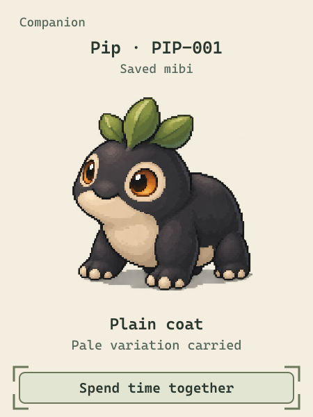
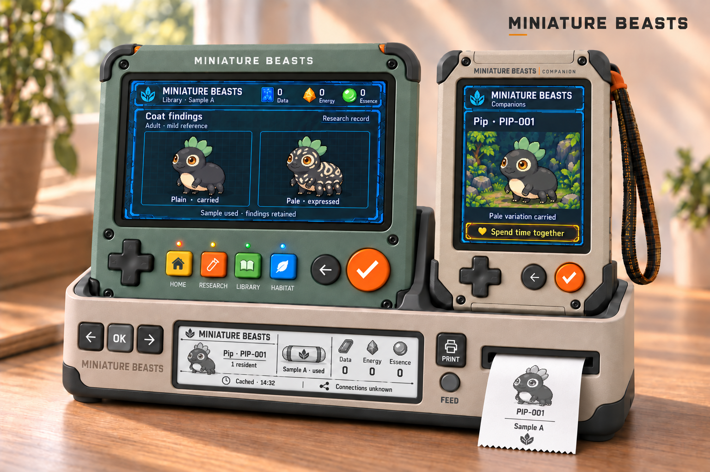
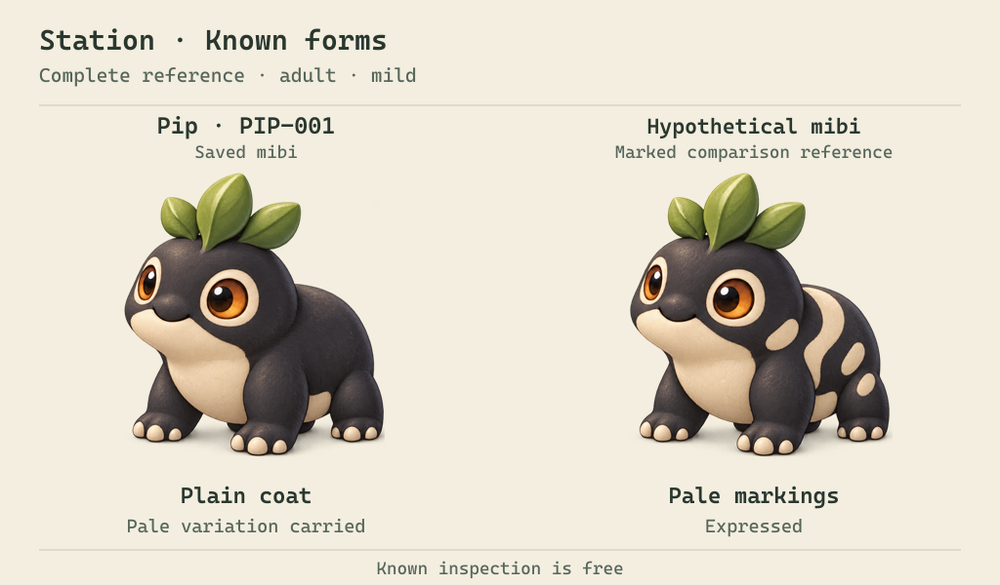
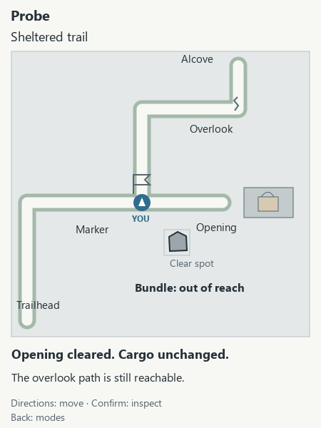
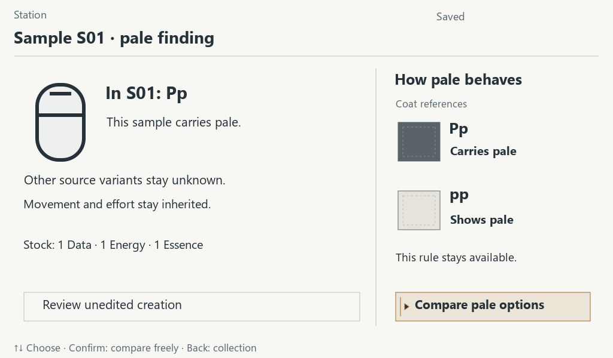
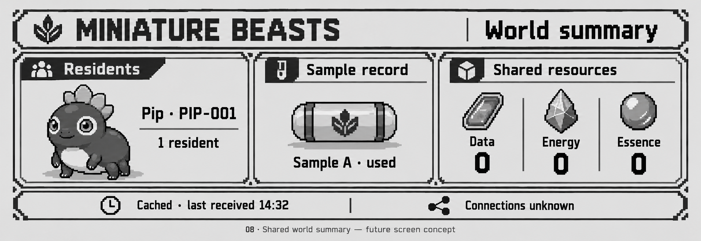

01 / Companion
Take the world with you.
A rugged casing, chunky controls and crisp HiBit art. Explore the map, gather samples, and make time for the mibi travelling with you.


A genetics-driven game you can hold
Head out with a rugged HiBit Companion. Come home to a high-resolution research Station. Give them both a home in the Caddy.
Explore the map, investigate what you bring back, and raise little creatures with generations of possibilities in their genes.
In development · By Dirty Pawz Press

StationHigh-resolution research & richer art
CompanionRugged handheld & HiBit character
CaddyCharge, check in & print
Made for each other
Physical controls. Distinctive screens. A game that travels with you and gives you a reason to sit down at your own research bench.
01 / Companion
A rugged casing, chunky controls and crisp HiBit art. Explore the map, gather samples, and make time for the mibi travelling with you.

02 / Station
Spread your findings across a high-resolution screen. Compare inherited traits, investigate your samples, and watch your collection come to life in richer detail.

The same individual stays recognisable on either device—and on the paper you keep.
From the trail to the research bench
Choose a route. Inspect what you find. Bring back a sample with something left to discover. Here’s a look at the map and research interactions taking shape.

Move around the map and inspect your surroundings. In this study, moving a loose stone opens a path. The bundle is still out of reach—there’s more exploring to do.

Study a sample and connect an inherited variant to what it does. Here, research reveals a carried pale marking and explains when it appears.
Identify your sample and create a mibi as it is, or investigate further and explore the changes that sample permits. You don’t have to uncover every secret first.
Bring samples and supplies home from the Companion.
Follow a finding at the Station. Start an incubation.
Bond with a mibi, help it grow, and take a partner on your next expedition.
Genetics gives every discovery depth
Follow the genes behind the markings, the movement and the instincts.
Miniature Beasts is built around a fictional genetics framework with eleven connected trait layers. Inherited variants combine and interact to shape a mibi’s body, capabilities and innate tendencies.
One trait can draw on several genes. One gene can affect several traits. A familiar-looking mibi can carry a variation you won’t see until another generation.
Research uncovers what is already there. Breeding passes actual copies from compatible parents of the same species, giving the next generation its own combination.
Then life adds its part: care, training and experience shape the individual you get to know.
Go deeper into the genetics frameworkInside the framework
A glimpse of what inheritance makes possible
Two plain-looking parents can both carry pale markings. Their offspring can inherit a pair that makes those markings appear.
PpPlain parent
Carries palePpPlain parent
Carries pale
Possible inherited pairs
PPPlain
No pale copy
PpPlain
Carries pale
ppPale markings
Shows the variation
One marking in one species. The wider genome gives you many more questions to follow.
The Caddy brings it all home
A shared charging home for your Station and Companion. A quiet summary of your collection. A printer that puts a piece of your world in your hands.

Set the devices down together and charge them for the next session.
Check your collection and saved discoveries on the Caddy’s summary display.
Print specimen cards, research notes and family trees. Fill a notebook with the discoveries that matter to you.
Your kit. Your collection.
Explore, research, raise and breed on a standalone kit, without a required phone or subscription.
Miniature Beasts is being built in the open. Follow the game rules, inspect the genetics, and explore the code and hardware designs as they develop.
Explore the projectTry it in your browser
Try gathering, research, incubation and a first mibi visit in the game prototype. Use the controls shown on the devices to play.
These experiments cover parts of the game and genetics framework. The genome workbench is separate from your game collection.
Not yet. Follow development here; release details will be announced when they’re ready.
The core game is designed for standalone, offline play. Optional online services extend trading and breeding to players further afield.
The design connects eleven trait domains through inheritance, expression and development. It covers appearance and functional traits, with room for hidden variation and interactions between genes. The prototypes exercise a smaller part of that framework; the full system is still being built.
The hardware images are concepts. The screen studies show the intended appearance and interactions. Final device specifications, screen art and the full game are still in development.
Yes. Explore the code, specifications and design studies on GitHub. The licensing guide covers software, hardware sources, documentation and artwork.